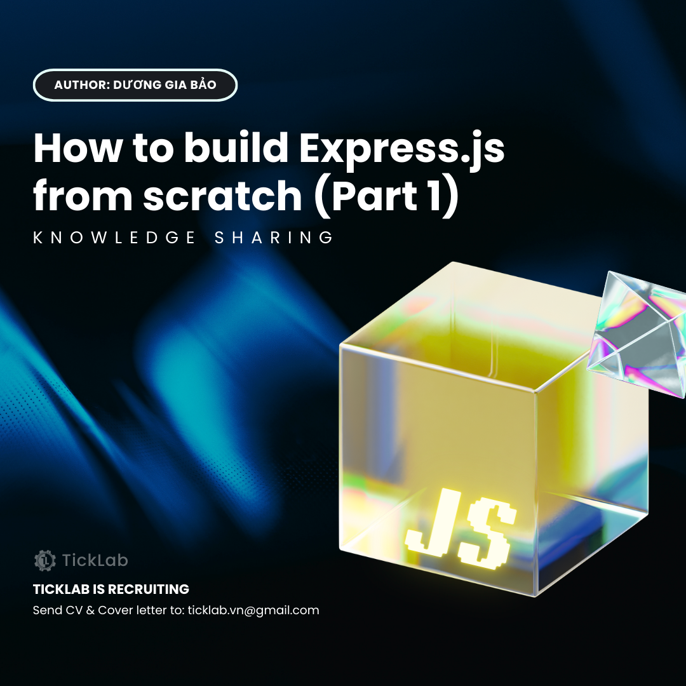
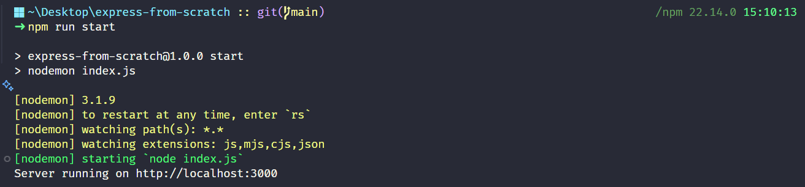

How to build basic Express.js from scratch [Part 1]¶

Nếu bạn đã quen với việc tạo giao diện bằng HTML, CSS, JavaScript và bây giờ muốn xây dựng backend cho trang web của bạn thì Express.js chính là lựa chọn hoàn hảo. Trong bài viết này, chúng ta sẽ cùng nhau trải qua hành trình xây dựng một framework Express.js cơ bản từ con số 0. Qua quá trình thực hiện, bạn sẽ được tìm hiểu cách Express.js xử lý routing, middleware và các yêu cầu HTTP, giúp kết nối giao diện người dùng với hệ thống server một cách mượt mà và linh hoạt.
1. Node.js là gì? Tại sao chọn Express.js?¶
Node.js là một nền tảng chạy JavaScript trên server-side, giúp các lập trình viên có thể sử dụng JavaScript không chỉ trên trình duyệt mà còn trên backend. Với khả năng xử lý bất đồng bộ và hiệu suất cao, Node.js trở thành lựa chọn phổ biến trong việc xây dựng ứng dụng web, API, microservices và nhiều hơn nữa. Tuy nhiên, bản thân Node.js không cung cấp sẵn một framework giúp xây dựng ứng dụng web dễ dàng. Đây chính là lý do Express.js ra đời.
Express.js là một framework nhẹ và mạnh mẽ dành cho Node.js, giúp việc xây dựng ứng dụng web và API trở nên đơn giản hơn. Express.js cho phép định tuyến các yêu cầu HTTP một cách trực quan, đồng thời cung cấp cơ chế middleware để mở rộng chức năng như xác thực, logging và xử lý lỗi một cách dễ dàng. Nhờ đó, việc kết nối giữa giao diện người dùng và hệ thống server trở nên mượt mà hơn bao giờ hết.
Để có thể xây dựng lại Express.js từ đầu, bạn cần trang bị cho mình một số kiến thức nền tảng quan trọng. Trước hết, hãy nắm vững cơ chế hoạt động của Node.js, từ event loop đến non-blocking I/O, cùng với cách quản lý module và lập trình JavaScript (như async/await, arrow functions,…). Bên cạnh đó, hiểu biết về giao thức HTTP, các phương thức như GET, POST, PUT, DELETE cùng cơ chế làm việc của request và response sẽ giúp bạn xây dựng các chức năng định tuyến và xử lý yêu cầu chính xác. Cuối cùng, mình khuyến khích các bạn dành một chút thời gian Getting started với Express.js để trong quá trình code có thể dễ dàng hơn.
2. Cài đặt môi trường¶
2.1. Cài đặt Node.js¶
Express.js được xây dựng trên nền tảng Node.js, vì vậy bạn cần cài đặt Node.js trước. Bạn có thể tải Node.js từ trang chủ chính thức: Node.js.org. Sau khi cài đặt, mở terminal và kiểm tra phiên bản Node.js và npm bằng lệnh:
Nếu hiển thị phiên bản, nghĩa là Node.js đã được cài đặt thành công.
2.2. Khởi tạo dự án¶
Tiếp theo, bạn cần tạo một thư mục cho dự án và khởi tạo một dự án Node.js mới bằng npm. Mở terminal và thực hiện các lệnh sau:
Lệnh npm init -y sẽ tạo một file package.json với cấu hình mặc định, giúp bạn quản lý các package cần thiết cho dự án. Hoặc bạn có thể sử dụng lệnh npm init và điền thông tin cấu hình của bạn.
2.3. Cài đặt thêm các package¶
Trong Node.js, có một số module được tích hợp sẵn gọi là core modules, ví dụ như http, url, querystring,… Điều này có nghĩa là bạn có thể sử dụng chúng ngay mà không cần cài đặt qua npm. Tuy nhiên, đối với nodemon - một công cụ hữu ích giúp tự động khởi động lại server khi có thay đổi code - bạn cần cài đặt riêng vì đây là package bên ngoài Node.js core modules. Bạn có thể cài đặt nodemon như sau:
Khi cài đặt một package với flag --save-dev, package đó sẽ được lưu vào mục devDependencies trong file package.json. Điều này có nghĩa là package chỉ được sử dụng trong quá trình phát triển và không cần thiết khi ứng dụng chạy ở môi trường production. Ví dụ, nodemon chỉ hữu ích khi lập trình, vì trong production bạn sẽ chạy server với Node.js mà không cần tự động restart code.
2.4. Cấu trúc thư mục dự án¶
Cấu trúc thư mục dưới đây giúp bạn tổ chức mã nguồn một cách rõ ràng và dễ dàng mở rộng. Cụ thể về cách tổ chức thư mục và vai trò của từng thành phần sẽ được phổ biến chi tiết trong các phần tiếp theo:
your-project-name/
│-- node_modules/ # Thư viện cài đặt
│-- public/ # Chứa file tĩnh (images, css, js, html)
│-- src/
│ │-- routes/ # Chứa các định tuyến API
│ │-- middleware/ # Chứa middleware tùy chỉnh
│ │-- static/ # Render các file tĩnh
│ │-- app.js # File cấu hình ứng dụng
│-- index.js # File khởi chạy server (entry point)
│-- package.json # File cấu hình package
│-- package-lock.json # File khóa phiên bản package
2.5. Cấu hình file package.json¶
Sau khi chạy lệnh npm init -y, file package.json sẽ được tạo với nội dung mặc định như sau:
{
"name": "your-project-name",
"version": "1.0.0",
"main": "index.js",
"scripts": {
"test": "echo \"Error: no test specified\" && exit 1"
},
"keywords": [],
"author": "",
"license": "ISC",
"type": "commonjs",
"description": ""
}
Để giúp quá trình phát triển trở nên dễ dàng hơn, chúng ta cần chỉnh sửa phần scripts để thêm lệnh chạy server bằng nodemon:
Ý nghĩa của từng dòng trong file package.json:
name: Tên của dự án.version: Phiên bản hiện tại của dự án.main: File chính của dự án.scripts: Chứa các lệnh có thể chạy bằngnpm run <script_command>.start: Chạy server bằngnodemon index.js, tự động khởi động lại server khi có thay đổi.
keywords: Danh sách các từ khóa mô tả dự án.author: Tên tác giả của dự án.license: Giấy phép sử dụng của dự án.type: Xác định cách Node.js xử lý module."commonjs"(mặc định) dùngrequire()vàmodule.exports."module"sử dụng ESM (ECMAScript Module) vớiimportvàexport.
description: Mô tả ngắn gọn về dự án.
Sau khi cập nhật, bạn có thể chạy server bằng lệnh:
Với bước này, dự án đã được thiết lập một cách cơ bản và sẵn sàng cho các bước tiếp theo trong quá trình xây dựng lại framework Express.js của riêng bạn.
3. Xây dựng Application¶
Sau khi đã cài đặt xong môi trường, bây giờ chúng ta sẽ đi sâu vào xây dựng lớp App - trọng tâm của framework. Lớp này không chỉ khởi tạo máy chủ HTTP mà còn tích hợp hệ thống định tuyến (Router) và xử lý middleware theo cách đơn giản nhưng hiệu quả. Chúng ta sẽ bắt đầu code trong file app.js đã được tạo ở mục 2.4.
3.1. Import các module cần thiết¶
Bạn cần import module http có sẵn của Node.js để tạo máy chủ. Ngoài ra, module Router (sẽ được xây dựng ở phần sau) sẽ chịu trách nhiệm quản lý các tuyến đường (route) và ánh xạ các yêu cầu HTTP tới các hàm xử lý tương ứng.
3.2. Khởi tạo App¶
Trong constructor, chúng ta khởi tạo một instance của Router và một mảng middlewares để lưu trữ các middleware do người dùng định nghĩa. Điều này cho phép chúng ta dễ dàng thêm các chức năng trung gian (như log, parse body, xác thực, …) trước khi đến handler chính. Trong phần này mình có đề cập tới middleware, nếu bạn chưa biết middleware là gì thì có thể tham khảo tại đây.
3.3. Xây dựng các phương thức¶
-
Phương thức use: Phương thức này cho phép thêm middleware vào ứng dụng. Khi một middleware được đăng ký, nó sẽ được lưu vào mảng
middlewares. Đây là cơ chế tương tự như của Express, giúp bạn dễ dàng “nhúng” các chức năng bổ trợ cho các request. -
Đăng ký các tuyến đường (Route): Hai phương thức
getvàpostcho phép người dùng đăng ký các route với các phương thức HTTP tương ứng. Khi gọithis.router.addRoute, chúng ta lưu trữ các route cùng với handler tương ứng. Điều này giúp framework tự động định tuyến request tới handler phù hợp dựa trên method và path. Các bạn có thể đọc thêm về các phương thứcget,post,put,deletetại đây, trong bài viết này mình chỉ hiện thực hai phương thứcgetvàpost. -
Phương thức listen:
Đây là nơi khởi tạo máy chủ HTTP bằng
http.createServer. Hàm callback xử lý mỗi request sẽ tuần tự gọi các middleware đã đăng ký thông qua hàmnext(). Cơ chế này hoạt động theo chuỗi, mỗi middleware sẽ được gọi theo thứ tự trong mảng:- Nếu còn middleware chưa được thực hiện, middleware tiếp theo sẽ được gọi.
- Khi tất cả middleware đã chạy, control được chuyển sang
this.router.handle(req, res)để xử lý request theo các route đã đăng ký.
Cuối cùng,
server.listenkhởi động máy chủ trên port được chỉ định và chạy callback khi server đã sẵn sàng. Bạn có thể tham khảo thêm về HTTP
3.4. Tổng kết¶
Qua phần này, chúng ta đã xây dựng được lớp App – thành phần cốt lõi của framework, giúp khởi tạo máy chủ, quản lý middleware và định tuyến cơ bản. Bây giờ, chúng ta sẽ tiếp tục với bước quan trọng tiếp theo: xây dựng hệ thống Router – nơi chịu trách nhiệm điều hướng request đến đúng handler tương ứng.
4. Hệ thống Router¶
Trong phần này, chúng ta sẽ cùng nhau xây dựng một hệ thống định tuyến (Router) đơn giản, giúp xử lý các yêu cầu (request) và phân phát chúng đến các hàm xử lý (handler) tương ứng dựa trên các phương thức HTTP (HTTP method) và đường dẫn (path). Chúng ta sẽ tạo file router.js trong folder routes đã được tạo ở mục 2.4.
4.1. Khởi tạo Router¶
Chúng ta tạo ra một lớp Router với một đối tượng routes để lưu trữ tất cả các tuyến đường (route) theo dạng phân nhóm theo HTTP method.
Cấu trúc của routes có dạng ví dụ như sau:
{
"GET": { "/": handlerFunction, "/about": handlerFunction },
"POST": { "/login": handlerFunction }
}
Điều này giúp việc tra cứu route theo phương thức trở nên nhanh chóng và có tổ chức.
4.2. Xây dựng các phương thức¶
-
Phương thức addRoute:
Phương thức
addRoute(method, path, handler)cho phép bạn đăng ký một tuyến đường mới:- method: Phương thức HTTP như GET, POST, PUT, DELETE,...
- path: Đường dẫn mà client gửi yêu cầu.
- handler: Hàm xử lý yêu cầu khi route phù hợp.
Nếu chưa có một nhóm route cho phương thức đó, ta khởi tạo một đối tượng rỗng. Sau đó, route được lưu vào
this.routestheo đường dẫn cho tương ứng. -
Phương thức handle:
Phương thức
handle(req, res)sẽ thực hiện các bước sau:- Trích xuất pathname: Tạo một đối tượng
URLtừreq.urlđể lấy ra đường dẫn của yêu cầu. Điều này giúp chúng ta chỉ quan tâm đến phần pathname mà không bị ảnh hưởng bởi query string. - Lấy HTTP method: Sử dụng
req.methodđể xác định phương thức của yêu cầu. - Tra cứu route: Kiểm tra xem có handler nào đã được đăng ký cho phương thức và đường dẫn tương ứng không.
- Gọi handler hoặc trả về lỗi 404: Nếu tìm thấy, gọi hàm handler đó và trả về kết quả. Nếu không, thiết lập mã lỗi 404 và gửi thông báo "Not Found".
- Trích xuất pathname: Tạo một đối tượng
4.3. Tổng kết¶
Trong phần này, chúng ta đã xây dựng một hệ thống Router đơn giản từ đầu, giúp xử lý yêu cầu HTTP bằng cách ánh xạ các phương thức và đường dẫn đến các hàm xử lý tương ứng. Mặc dù đây là một phiên bản đơn giản, nhưng nó đã thể hiện rõ cách một hệ thống định tuyến hoạt động trong Express.js. Trong phần tiếp theo, chúng ta sẽ thiết lập file index.js (entry point) để kiểm tra xem server của chúng ta có hoạt động đúng hay không.
5. Thiết lập entry point¶
Sau khi đã xây dựng hệ thống Router, bước tiếp theo là thiết lập file index.js làm entry point cho ứng dụng. Đây là file chịu trách nhiệm khởi động server và đăng ký các route để kiểm tra xem hệ thống của chúng ta có hoạt động chính xác hay không.
5.1. Khởi tạo ứng dụng¶
Trước tiên, chúng ta cần import lớp App từ thư mục sr, đây là nơi chứa toàn bộ logic xử lý request và routing của chúng ta. Sau đó, chúng ta tạo một instance của App, đóng vai trò như server chính của ứng dụng:
5.2. Định nghĩa route¶
Sử dụng phương thức get() để đăng ký một route đơn giản tại /, trả về chuỗi "Hello World" khi có request đến:
5.3. Khởi động server¶
Cuối cùng, chúng ta gọi phương thức listen(port, callback) để server bắt đầu lắng nghe các request trên cổng 3000. Khi server chạy thành công, nó sẽ in ra thông báo trong console:
5.4. Kết quả¶
Sau khi chạy lệnh:
Bạn sẽ nhận được thông báo trên terminal console như sau:

Khi truy cập http://localhost:3000/ trên trình duyệt hoặc dùng cURL:
Bạn sẽ nhận được phản hồi:
Như vậy là server của chúng ta đã được khởi tạo thành công.
6. Tổng kết Phần 1¶
Trong phần này, chúng ta đã trải qua những bước cơ bản để xây dựng lại Express.js từ đầu, bao gồm:
- Cài đặt môi trường: Thiết lập Node.js và khởi tạo dự án.
- Xây dựng App: Tạo lớp
Appđể quản lý toàn bộ ứng dụng. - Xây dựng Router: Phát triển hệ thống định tuyến đơn giản để xử lý các request dựa trên phương thức và đường dẫn.
- Khởi chạy server: Thiết lập file entry point và chạy server để kiểm tra các route hoạt động chính xác.
Những bước này đã giúp bạn nắm bắt cơ chế hoạt động cơ bản bên trong của Express.js. Trong phần tiếp theo, chúng ta sẽ đi sâu hơn vào việc xử lý middleware và static file serving để mở rộng khả năng của ứng dụng.
Bạn có thể theo dõi tiến trình và cập nhật của dự án qua Github repository.
7. Tài liệu tham khảo¶
- Express.js Documentation, https://expressjs.com/
- Node.js HTTP Module API, https://nodejs.org/api/http.html
- How To Use And Write Express Middleware, https://blog.webdevsimplified.com/2019-12/express-middleware-in-depth/